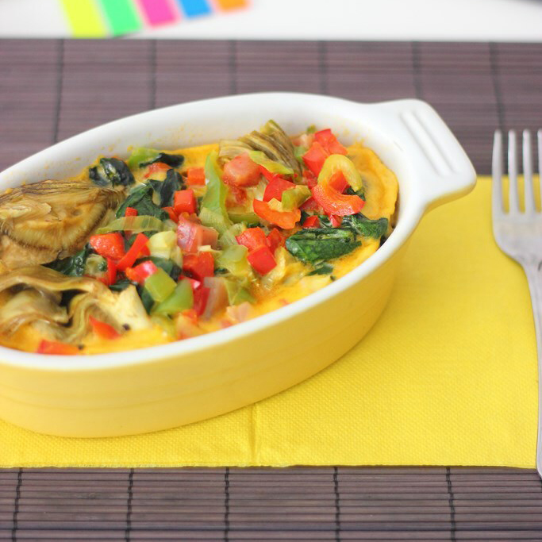

Tartar de tomate y jamón con pechuga de pollo a la plancha
 Traemos la receta de un pastel de verduras rápido que se prepara en un momento que se puede
comer recién hecho como frío o recalentado en el microondas, por lo que es una candidata perfecta para dar color a los túpers
Ingredientes:
- Ají rojo y verde
- Espinaca
- Cebolla
- Huevos
- Sal y pimienta
- Lomo
- Queso parmesano